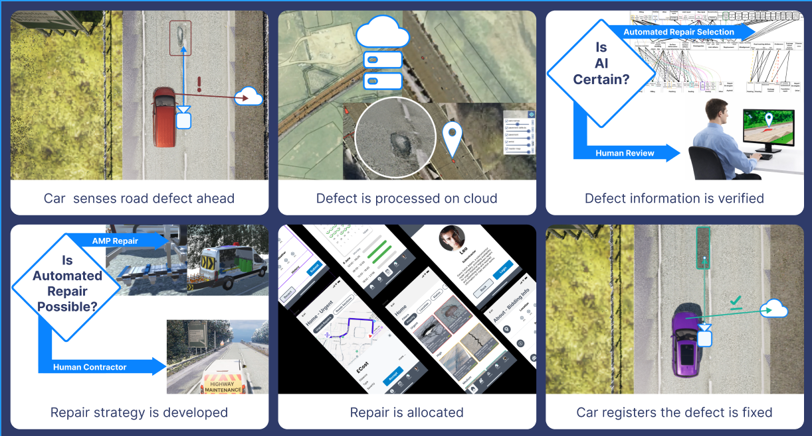

Forward Deployed Engineer • Product OwnerRoadGP Interface: AI Defect Triage & Workflow UX
Designing and rapidly prototyping an operational interface that bridges raw machine learning detections directly with road maintenance contractors and regional inspectors.
Explore Case Study